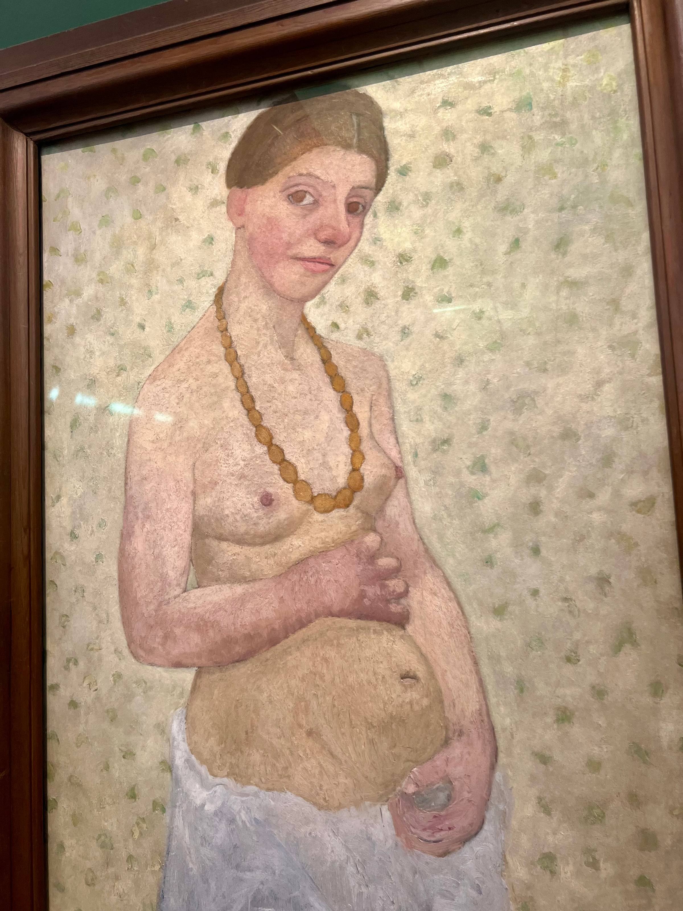
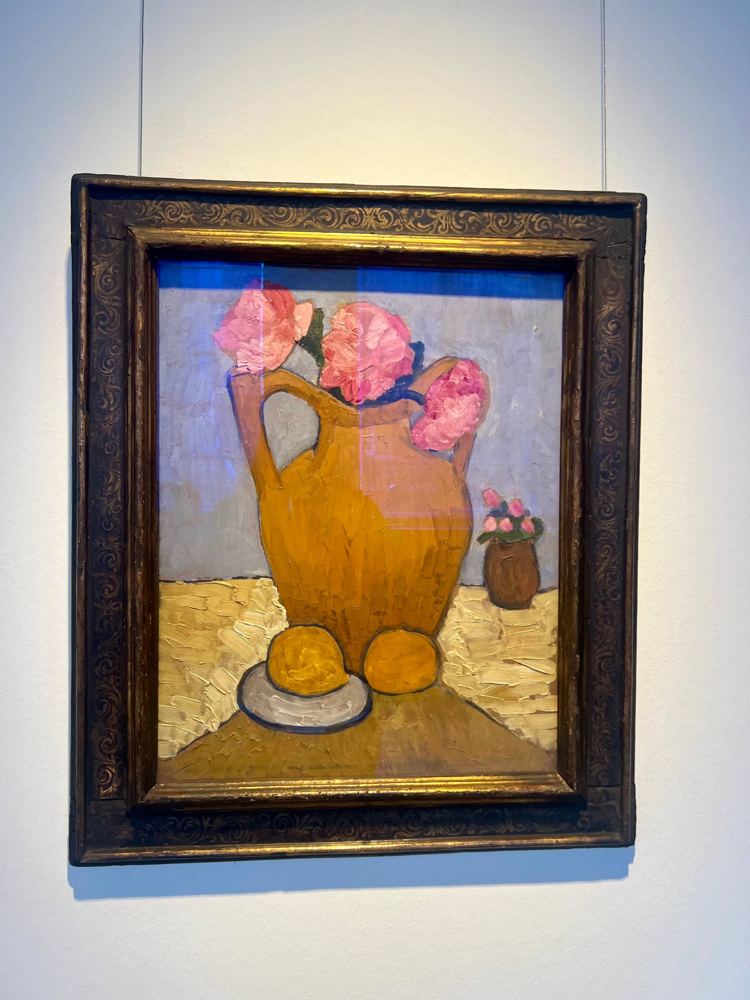
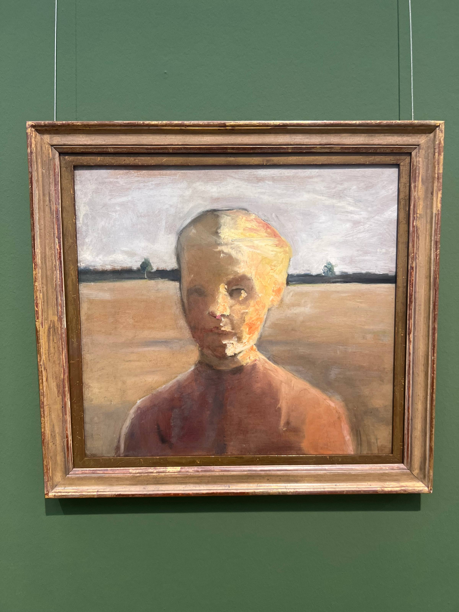

Ich schreibe dir von einem kurzen Fest
Hallo, lieber Mensch auf der anderen Seite des Bildschirms,
letzten Samstag war ich in Bremen. Anfang des Sommers haben meine Nachbarin H. und ich entdeckt, dass wir beide große Verehrerinnen von Paula Modersohn-Becker sind. Weil sich ihr Geburtstag zum hundertfünfzigsten Mal jährt, gab es nicht viel zu planen. Wir mussten nur einen Samstag aussuchen und losfahren.
Ein paar ihrer Bilder habe ich zum ersten Mal 2022 in Basel gesehen. Ihr Werk hat mich beeindruckt und berührt, noch bevor ich fast irgendetwas über ihr Leben wusste. Wiedergefunden habe ich Paula auf einem anderen Weg, dem der Briefe. Mitten in meinem Brieffieber, das 2024 ausbrach, stieß ich auf ihre Korrespondenz mit Rainer Maria Rilke: eine innige Künstlerfreundschaft, die die beiden bis zuletzt getragen hat.
Als Paula zehn war, spielte sie mit ihren Cousinen in einer Sandgrube, und die Erde gab nach. Sie und ihre Cousine Maidli wurden rechtzeitig ausgegraben, ihre andere Cousine, Cora, nicht. Zwanzig Jahre später schreibt sie an Rilke: „Wir wurden gerettet. Das erste Ereignis meines Lebens war dieses Kind. Mit ihm kam mir der erste Schimmer von Bewusstsein.“
Der erste Schimmer von Bewusstsein. Seit ich diesen Satz gelesen habe, kreise ich um dieselbe Frage: Habe ich so ein Ereignis, eines, das mir meinen ersten Schimmer von Bewusstsein gab? Und wenn nicht, kann Paula es mir geben? Kann man sich Ereignisse, die Bewusstsein bringen, überhaupt leihen? Vielleicht gehen wir dafür ins Museum.

Eine Freundin von ihr schrieb Jahre später, darauf gehe ihre Art zurück, in der Kunst niemals nachzugeben. Genauso lese ich diesen Eintrag aus ihrem Tagebuch vom 26. Juli 1900:
Beim Malen gingen mir heute die Gedanken so durch den Kopf, und ich will sie für die Meinen aufschreiben. Ich weiß, ich werde nicht sehr lange leben. Aber ist das denn traurig? Ist ein Fest schöner, weil es länger ist? Und mein Leben ist ein Fest, ein kurzes, intensives Fest.
Dieser Satz stand am Anfang der Ausstellung, gleich am Eingang, und ich blieb lange davor stehen. Woher wusste sie, dass sie nicht lange leben würde? Sie war nicht krank. Oder wusste sie gar nichts, und diejenige, die lebt, ohne daran zu denken, dass sie sterben wird, bin ich? Wie zerstreut ich doch bin.
Mit dreiundzwanzig erreichte sie, dass einige ihrer Bilder in der Bremer Kunsthalle gezeigt wurden. Die Kritik war gnadenlos: Ihre Figuren seien „hässlich“ und „unfertig“. Damals nahmen die Kunstakademien keine Frauen auf, und wer aus der Rolle der Mutter und Hausfrau fiel, galt als „unweiblich“. Sie malte ihr Leben lang weiter, und nicht, weil sie sich ihrer sicher gewesen wäre. Ihre Tagebücher sind voller Zweifel und voller Eile, voranzukommen und endlich so zu malen, wie sie wollte. Sie hat nie darauf gewartet, nicht mehr zu zweifeln.

Ein Wort kehrt in ihren Heften immer wieder: das Werden. Das war Malen für sie. Es war kein Beruf und keine Laufbahn, sondern die Gestalt, die ihr Werden annahm.
Ich versuche, das, was Paula mich lehrt, in mein eigenes Gelände zu übersetzen, und frage mich, was dieses Werden für mich wäre. Ich male nicht. Ich schreibe Notizen, schreibe aus diesen Notizen Texte, und ich übersetze. Ich frage mich, ob die Notizen das sind, das Werden, oder es sein können. Du schreibst etwas auf, das du nicht ganz verstehst, und lässt es halb liegen, ungelöst. Monate später kommst du zurück, und die Notiz ist von allein gewachsen, oder du bist gewachsen, oder beides, und meistens ist es beides.
Paula hat nicht gewartet, bis ihr Stil feststand. Sie hat viel gemalt, und der Stil hat sich nach und nach gezeigt. Mit den Notizen und mit dem System ist es genauso. Man glaubt es nur schwer, wenn man seit einer halben Stunde überlegt, welche Kategorien oder Tags man nehmen soll.
Es will mir nicht in den Kopf, dass Paula in vierzehn Jahren siebenhundert Bilder und über tausend Zeichnungen geschaffen hat und starb, während fast alle noch bei ihr zu Hause standen. Ich denke an die Ungerechtigkeit, natürlich, aber vor allem daran, dass sie sie trotzdem gemalt hat.

Neulich sagte D. zu mir, er habe es in den letzten Monaten wie ein Puzzle gesehen, das sich vor seinen Augen zusammensetzt: Was ich eigentlich will, ist schreiben. Und das stimmt, ich weiß es.
Vielleicht warte ich seit Jahren darauf, dass mir jemand die Erlaubnis gibt, oder darauf, etwas fertig zu haben, oder dass die Zweifel vergehen. Oft habe ich auch befürchtet, das Notizenmachen sei nur eine Art, mich vom Schreiben abzulenken. Du kennst das: die Vorarbeit, mit der man der eigentlichen Arbeit ausweicht. Aber nein. Wenn ich mir bei etwas sicher bin, dann dabei: Die Notizen sind mein Gerüst.
Jetzt merke ich, dass Paula mir viele kleine Stücke Bewusstsein geschenkt hat. Notizen schreiben ist mein Werden als Schriftstellerin. Es ist nicht die Vorbereitung und nicht die Generalprobe, sondern das Werden. Und wenn es das Werden ist, dann geschieht es schon. Es gibt keinen Tag, an dem man Schriftstellerin wird, so wie es keinen Tag gibt, an dem der Herbst kommt.